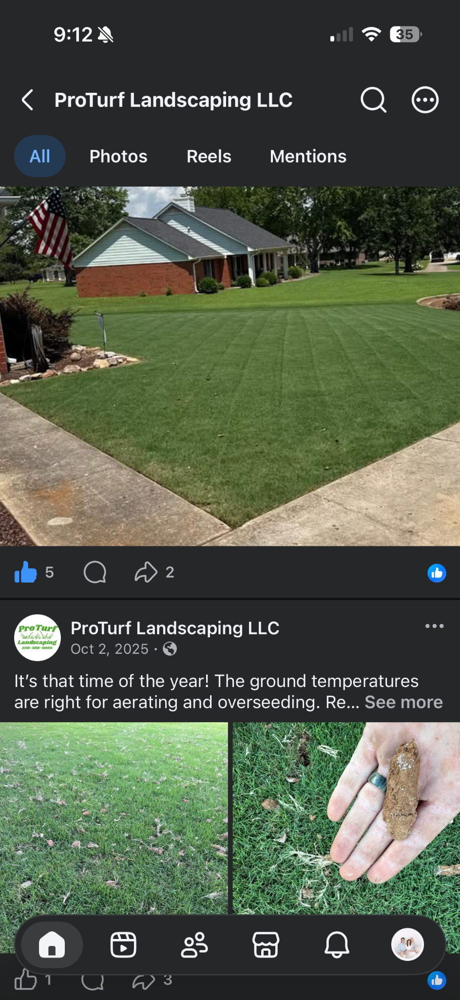
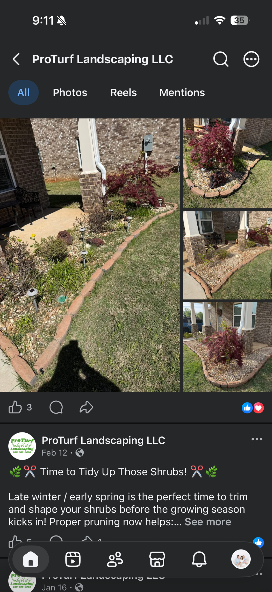
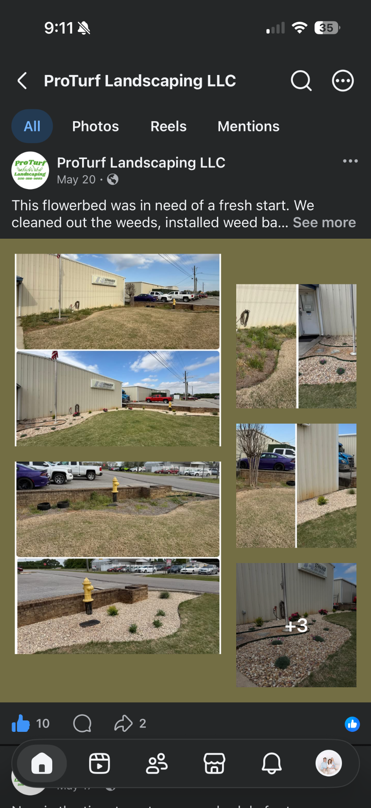

Lawn Care
Professional mowing, edging and property upkeep with a crisp, consistent finish.
Reliable lawn care, landscape cleanups, bed renovations, shrub maintenance and seasonal services for homes and businesses across North Alabama.
ProTurf Landscaping LLC helps property owners keep outdoor spaces sharp, healthy and welcoming. From routine maintenance to full flowerbed refreshes, we focus on the details that make a property stand out.
Professional mowing, edging and property upkeep with a crisp, consistent finish.
Seasonal turf services designed to improve density, root health and overall lawn appearance.
Weed removal, bed cleanup, new rock or mulch, edging and plant installation.
Pruning, shaping and cleanup to keep landscape plants neat and well maintained.
Professional exterior presentation and landscape maintenance for local businesses.
Targeted cleanup and maintenance to get your property ready for the growing season.
Real projects completed by ProTurf.



Based in Meridianville and serving nearby communities with dependable, professional lawn and landscape service.
Ask about service at your property →Call or send a quick estimate request.
We’ll discuss the property, scope and desired result.
Professional service with attention to the details.
Contact ProTurf Landscaping LLC for a free estimate.